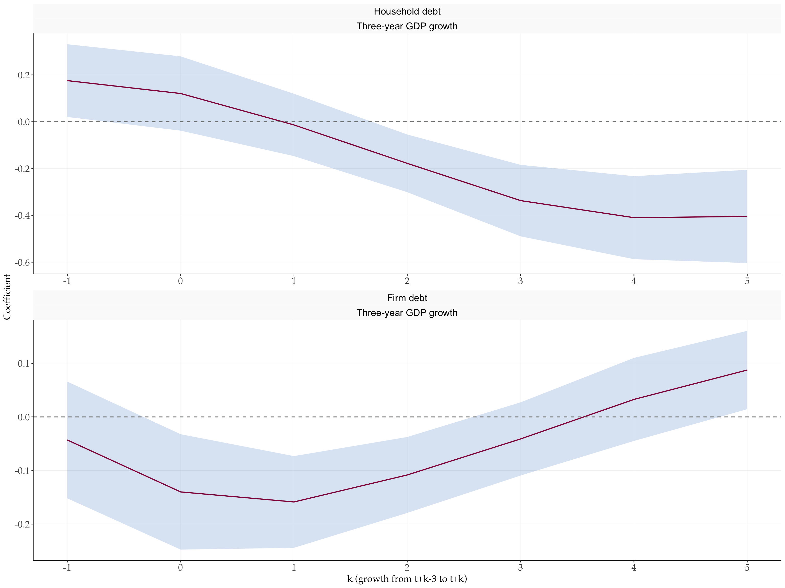
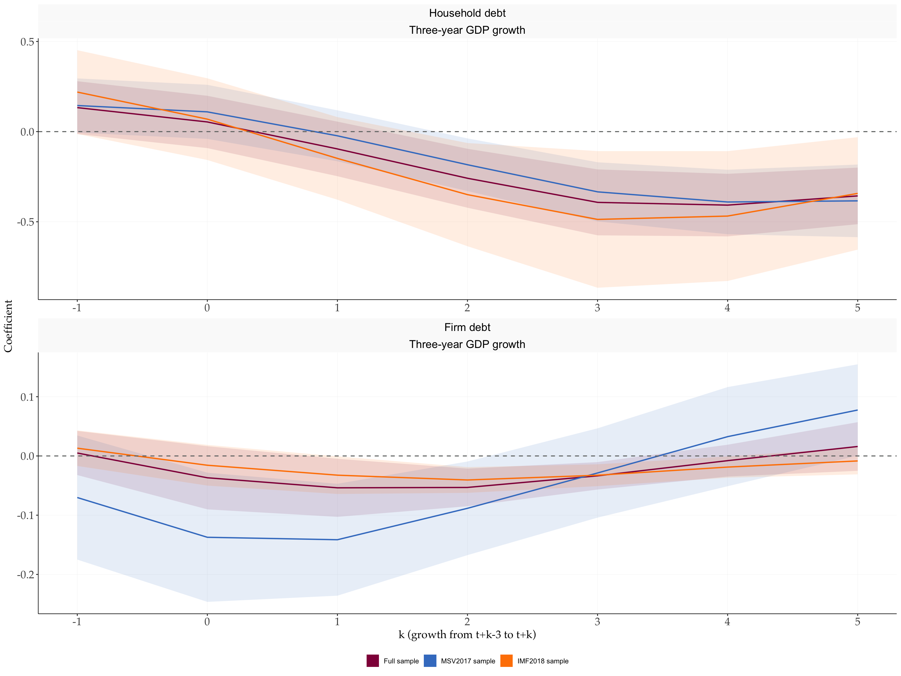
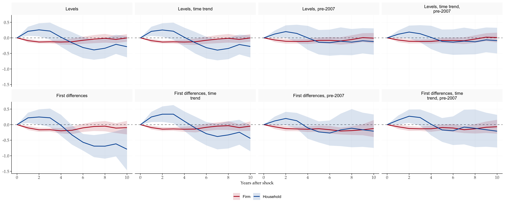

library(tidyverse)
library(tidyMacro)
set_theme(fThemeTidyMacro())Panel Local Projections
Replicating Mian, Sufi & Verner (2017)
1 Overview
Mian et al. (2017) show that a rise in the household debt to GDP ratio predicts higher growth for a short while and lower growth in the medium run, for 30 countries from 1960 to 2012. Their dynamic evidence comes from panel regressions in which the left-hand side is led one year at a time. Each of these is a panel local projection, so each is a single call to fLPPanel(), tidyMacro‘s panel local-projection estimator. This chapter replicates three exercises from the authors’ replication files:
- Table II of the paper. Three-year GDP growth from \(t+k-3\) to \(t+k\), for \(k=-1,\dots,5\), on the change in household and firm debt from \(t-4\) to \(t-1\), with country fixed effects and standard errors clustered on country and year.
- The 2018 out-of-sample update of the authors’ replication files, the “Timing of RHS” table. It re-runs Table II on the IMF Global Debt Database for the full sample, for the original 30 countries, and for the new countries only.
- Figure 2 of the paper. Jordà (2005) local projections with five lags, in levels and in first differences, with and without a time trend and the Great Recession.
Table II is reproduced to machine precision, and Figure 2 matches the medium-run effect the paper reports in its text.
1.1 The estimator
At horizon \(h\), fLPPanel() estimates
\[y_{i,t+h} = \alpha^{(h)}_{\mathrm{FE}} + \beta_h'\, x_{it} + \gamma_h' w_{it} + u_{i,t+h},\]
where \(x_{it}\) are the shock terms, \(w_{it}\) the controls, and the terms after | in the formula are absorbed fixed effects. With several shock terms, as with household and firm debt below, the fit returns one response per term. Shared conventions (formula grammar, ..macros, l()/f(), panel_id, output shapes, multi-band conf) are documented in the Local Projections syntax primer. The panel-specific arguments are:
clusterselects the clustering dimension:~unit,~time, or~unit + time, the last with the Cameron et al. (2011) two-way estimator. Omitting it clusters on time.sscselects the small-sample correction."none"(the default) is the asymptotic sandwich read against normal critical values, which is also what Stata’sxtivreg2reports without thesmalloption."CR1"applies the Stata /fixestmultiplier \(\tfrac{G}{G-1}\cdot\tfrac{N-1}{N-K}\) to each one-way component and uses \(t\) with \(\min(G)-1\) degrees of freedom."IK"is the Imbens and Kolesár (2016) refinement, defined for time clustering only.cumulative = TRUEprojects \(\sum_{r=0}^{h} y_{i,t+r}\) instead of \(y_{i,t+h}\).p_maxadds up to \(\min(h, p_{\max})\) lags of the regressand and the shock as controls.
2 Setup and data
MianSufiVerner2017 is the QJE panel and MianSufiVerner2018 the IMF Global Debt Database (GDD) extract the authors merged in for the 2018 tests; both are built from the authors’ replication files.
data("MianSufiVerner2017")
data("MianSufiVerner2018")
# Stata's L.x / F.x on an xtset panel: the value of x in (country, year - k).
# Missing years stay missing, so a gap in the panel is never bridged.
tlag <- function(x, id, year, k = 1) {
x[match(paste(id, year - k), paste(id, year))]
}3 Table II: debt expansion and future growth
The paper estimates, for each \(k=-1,0,\dots,5\),
\[\Delta_3 y_{i,t+k} = \alpha_i + \beta_{HH}\,\Delta_3 d^{HH}_{i,t-1} + \beta_F\,\Delta_3 d^{F}_{i,t-1} + u_{i,t+k}.\]
The regressors are dated \(t\) and the outcome is led \(k\) years. Take the regressand to be \(\Delta_3 y_{i,t-1}\) (three-year growth ending last year). At horizon \(h\) fLPPanel() then projects \(\Delta_3 y_{i,t+h-1}\), so the seven columns of Table II are horizons \(h = 0,\dots,6\) of a single fit, with \(k = h - 1\). Both debt terms are shocks, so the fit returns one response per sector.
qje <- MianSufiVerner2017 |>
transmute(country, year, lnGDP_d3, L1D3HHD_GDP, L1D3NFD_GDP) |>
mutate(L1yd3 = tlag(lnGDP_d3, country, year, 1))ssc = "none" is the convention of Stata’s xtivreg2, fe cluster(cgroup year) without the small option: Cameron–Gelbach–Miller two-way clustering (Cameron et al. 2011) with no finite-sample multiplier.
fit_qje <- fLPPanel(
L1yd3 ~ L1D3HHD_GDP + L1D3NFD_GDP | country,
data = qje,
panel_id = c("country", "year"),
shock = c("L1D3HHD_GDP", "L1D3NFD_GDP"),
horizons = 6,
conf = 95,
cluster = ~country + year,
ssc = "none"
)The published coefficients and standard errors, copied from Table II of Mian et al. (2017):
published <- tibble(
k = -1:5,
hh = c(0.176, 0.121, -0.0136, -0.178, -0.337, -0.410, -0.405),
hh_se = c(0.0793, 0.0810, 0.0680, 0.0629, 0.0779, 0.0905, 0.102),
f = c(-0.0430, -0.140, -0.159, -0.108, -0.0411, 0.0327, 0.0876),
f_se = c(0.0556, 0.0550, 0.0437, 0.0362, 0.0349, 0.0395, 0.0373)
)
ours <- tibble(
k = fit_qje$horizons - 1,
hh = fit_qje$irfs[, "L1D3HHD_GDP"],
hh_se = fit_qje$irfs_se[, "L1D3HHD_GDP"],
f = fit_qje$irfs[, "L1D3NFD_GDP"],
f_se = fit_qje$irfs_se[, "L1D3NFD_GDP"]
)
left_join(ours, published, by = "k", suffix = c("", "_paper")) |>
select(k, hh, hh_paper, hh_se, hh_se_paper, f, f_paper, f_se, f_se_paper) |>
mutate(across(-k, \(x) round(x, 4)))
#> # A tibble: 7 × 9
#> k hh hh_paper hh_se hh_se_paper f f_paper f_se f_se_paper
#> <dbl> <dbl> <dbl> <dbl> <dbl> <dbl> <dbl> <dbl> <dbl>
#> 1 -1 0.176 0.176 0.0793 0.0793 -0.043 -0.043 0.0556 0.0556
#> 2 0 0.121 0.121 0.081 0.081 -0.14 -0.14 0.055 0.055
#> 3 1 -0.0136 -0.0136 0.068 0.068 -0.159 -0.159 0.0437 0.0437
#> 4 2 -0.178 -0.178 0.0629 0.0629 -0.108 -0.108 0.0362 0.0362
#> 5 3 -0.337 -0.337 0.0779 0.0779 -0.0411 -0.0411 0.0349 0.0349
#> 6 4 -0.410 -0.41 0.0905 0.0905 0.0327 0.0327 0.0395 0.0395
#> 7 5 -0.405 -0.405 0.102 0.102 0.0876 0.0876 0.0373 0.0373Rounded to the three significant digits the paper prints, all 28 numbers agree:
ours_cols <- as.matrix(select(ours, -k))
paper_cols <- as.matrix(select(published, -k))
all(abs(signif(ours_cols, 3) - paper_cols) < 1e-12)
#> [1] TRUEThis includes column (1), \(k=-1\), which uses 815 observations rather than the 785 of column (2). The 30 extra rows are the 2013 debt changes: their growth ending in 2012 is observed, while every later lead runs past the end of the data. A per-horizon sample therefore uses them in column (1) only. fLPPanel() handles this without any special treatment.
fPlotIRF(fIRF(fit_qje),
shocknames = c("Household debt", "Firm debt"),
varnames = "Three-year GDP growth") +
scale_x_continuous(breaks = 0:6, labels = \(h) h - 1) +
labs(x = "k (growth from t+k-3 to t+k)", y = "Coefficient")
The household debt coefficient changes sign: positive for growth ending in \(t-1\) and \(t\), about \(-0.4\) for growth three to five years ahead. The firm debt coefficient is negative early and fades.
4 The 2018 update: out-of-sample countries
In 2018 the authors re-ran Table II on the IMF Global Debt Database, which covers far more countries. Following the authors’ Stata code, the data are merged, the debt and growth variables are rebuilt from the GDD series, and the panel keeps only years in which both one-year debt changes are observed (keep if D1HHD_GDP < . & D1NFD_GDP < .). The lagged regressand is formed after that step, as in their code.
master_keys <- MianSufiVerner2017 |>
mutate(country = recode(country,
"Hong Kong" = "Hong Kong SAR",
"Korea, Rep." = "Korea, Republic of")) |>
select(country, year, mainsmp1, c_mainsmp)
update <- full_join(master_keys,
MianSufiVerner2018,
by = c("country", "year")) |>
arrange(country, year) |>
mutate(
lnGDP_d3 = 100 * (log(rgdp) - log(tlag(rgdp, country, year, 3))),
L1D3HHD_GDP = tlag(hh_ls, country, year, 1) - tlag(hh_ls, country, year, 4),
L1D3NFD_GDP = tlag(nfc_ls, country, year, 1) - tlag(nfc_ls, country, year, 4),
D1HHD_GDP = hh_ls - tlag(hh_ls, country, year, 1),
D1NFD_GDP = nfc_ls - tlag(nfc_ls, country, year, 1)
) |>
filter(!is.na(D1HHD_GDP), !is.na(D1NFD_GDP)) |>
mutate(L1yd3 = tlag(lnGDP_d3, country, year, 1))
# Countries that are part of the original QJE sample
qje_countries <- update |>
filter(mainsmp1 %in% 1) |>
distinct(country) |>
pull()The three samples of the authors’ code are: every country; the rows that belong to the QJE master file (if c_mainsmp == 1); and the countries outside the QJE sample. Stata’s if restricts the rows a regression is run on, while their growth rates stay available as lead targets. The same restriction in fLPPanel() sets the regressors to NA outside the sample: those rows then never enter as regression rows, but their outcomes are still used as leads.
fit_update <- function(data) {
fLPPanel(
L1yd3 ~ L1D3HHD_GDP + L1D3NFD_GDP | country,
data = data,
panel_id = c("country", "year"),
shock = c("L1D3HHD_GDP", "L1D3NFD_GDP"),
horizons = 6,
conf = 95,
cluster = ~country + year
)
}
samples <- list(
"Full sample" = update,
"MSV2017 sample" = mutate(update,
across(c(L1D3HHD_GDP, L1D3NFD_GDP),
\(x) if_else(c_mainsmp %in% 1, x, NA))),
"IMF2018 sample" = filter(update, !country %in% qje_countries)
)
fits_update <- map(samples, fit_update)
map_int(samples, \(d) n_distinct(d$country[!is.na(d$L1D3HHD_GDP)]))
#> Full sample MSV2017 sample IMF2018 sample
#> 137 30 107do.call(fPlotIRF, c(map(fits_update, fIRF),
list(shocknames = c("Household debt", "Firm debt"),
varnames = "Three-year GDP growth"))) +
scale_x_continuous(breaks = 0:6, labels = \(h) h - 1) +
labs(x = "k (growth from t+k-3 to t+k)", y = "Coefficient")
imap_dfr(fits_update, \(fit, sample) tibble(
sample = sample,
k = fit$horizons - 1,
hh = fit$irfs[, "L1D3HHD_GDP"],
hh_se = fit$irfs_se[, "L1D3HHD_GDP"],
f = fit$irfs[, "L1D3NFD_GDP"],
f_se = fit$irfs_se[, "L1D3NFD_GDP"]
)) |>
mutate(across(hh:f_se, \(x) round(x, 3))) |>
pivot_wider(names_from = sample, values_from = hh:f_se) |>
select(k, starts_with("hh_"), starts_with("f_"))
#> # A tibble: 7 × 13
#> k `hh_Full sample` `hh_MSV2017 sample` `hh_IMF2018 sample`
#> <dbl> <dbl> <dbl> <dbl>
#> 1 -1 0.133 0.145 0.219
#> 2 0 0.054 0.11 0.069
#> 3 1 -0.096 -0.023 -0.148
#> 4 2 -0.259 -0.184 -0.349
#> 5 3 -0.392 -0.334 -0.487
#> 6 4 -0.408 -0.39 -0.468
#> 7 5 -0.356 -0.384 -0.343
#> # ℹ 9 more variables: `hh_se_Full sample` <dbl>, `hh_se_MSV2017 sample` <dbl>,
#> # `hh_se_IMF2018 sample` <dbl>, `f_Full sample` <dbl>,
#> # `f_MSV2017 sample` <dbl>, `f_IMF2018 sample` <dbl>,
#> # `f_se_Full sample` <dbl>, `f_se_MSV2017 sample` <dbl>,
#> # `f_se_IMF2018 sample` <dbl>
NoteCheck against Stata
Stata builds each lead F.L1yd3 before it runs the regression, so every horizon has its own sample: a row can be a lead target even when its own regressors are missing, and a regression row enters at \(h \geq 1\) even when its own \(h=0\) outcome is missing. fLPPanel() selects the sample the same way, horizon by horizon. The 2018 update has no published numbers to compare with, so the chunk below rebuilds the authors’ Stata xtivreg2 regressions one horizon at a time with fixest. It keeps singleton countries, as xtivreg2 does, and forms the Cameron–Gelbach–Miller two-way variance without a small-sample correction. The same construction reproduces the published Table II exactly.
library(fixest)
stata_style <- function(data, subset = rep(TRUE, nrow(data))) {
data$cy <- paste(data$country, data$year)
map_dfr(0:6, function(h) {
data$lhs <- tlag(data$L1yd3, data$country, data$year, -h)
fit <- feols(lhs ~ L1D3HHD_GDP + L1D3NFD_GDP | country, data,
subset = subset, fixef.rm = "none", notes = FALSE)
one_way <- \(cl) vcov(fit, cluster = cl,
ssc = ssc(adj = FALSE, cluster.adj = FALSE))
V <- one_way(~country) + one_way(~year) - one_way(~cy)
tibble(h = h, b = list(coef(fit)), se = list(sqrt(diag(V))), n = nobs(fit))
})
}
stata_fits <- list(
"Full sample" = stata_style(update),
"MSV2017 sample" = stata_style(update, update$c_mainsmp %in% 1),
"IMF2018 sample" = stata_style(filter(update, !country %in% qje_countries))
)
imap_dfr(fits_update, \(fit, sample) {
ref <- stata_fits[[sample]]
tibble(
sample = sample,
max_coef_gap = max(abs(fit$irfs - do.call(rbind, ref$b))),
max_se_gap = max(abs(fit$irfs_se - do.call(rbind, ref$se))),
same_nobs = identical(unname(fit$nobs), ref$n)
)
})
#> # A tibble: 3 × 4
#> sample max_coef_gap max_se_gap same_nobs
#> <chr> <dbl> <dbl> <lgl>
#> 1 Full sample 5.55e-16 8.33e-17 TRUE
#> 2 MSV2017 sample 7.77e-16 6.94e-17 TRUE
#> 3 IMF2018 sample 9.99e-16 1.39e-16 TRUE5 Figure 2: Jordà local projections
Section III.B of the paper checks the VAR evidence with local projections that control for five lags of debt and GDP. In levels,
\[y_{i,t+h-1} = \alpha^h_i + \sum_{j=1}^{5} \beta^h_{HH,j}\, d^{HH}_{i,t-j} + \sum_{j=1}^{5} \beta^h_{F,j}\, d^{F}_{i,t-j} + \sum_{j=1}^{5} \delta^h_j\, y_{i,t-j} + \epsilon^h_{i,t+h-1}, \qquad h = 1,\dots,10,\]
where \(d^s_{it}\) is nominal sector debt in year \(t\) over nominal GDP in \(t-1\) (HHD_L1GDP, NFD_L1GDP), and the response is the sequence \(\hat\beta^h_{HH,1}\), \(\hat\beta^h_{F,1}\). Dating the regressors at \(s = t-1\) gives fLPPanel()’s form: outcome \(y_{i,s+h}\), shock \(d_{i,s}\), controls \(d_{i,s-1},\dots,d_{i,s-4}\) and \(y_{i,s},\dots,y_{i,s-4}\). Because \(y_{i,s}\) is a control, the response at \(h=0\) is exactly zero, as in the figure.
The first-difference version projects \(\Delta_h y_{i,t+h-1} = y_{i,t+h-1} - y_{i,t-1}\) on five lags of \(\Delta d^{HH}\), \(\Delta d^{F}\) and \(\Delta y\). cumulative = TRUE with regressand \(\Delta y\) projects \(y_{i,s+h} - y_{i,s-1}\). That differs from the paper’s outcome by \(\Delta y_{i,s}\), which is itself a control, so the debt coefficients are the same.
fig2 <- MianSufiVerner2017 |>
transmute(country, year,
y = 100 * lnGDP,
dHH = HHD_L1GDP,
dF = NFD_L1GDP) |>
mutate(
dy = y - tlag(y, country, year, 1),
dy3 = y - tlag(y, country, year, 3),
ddHH = dHH - tlag(dHH, country, year, 1),
ddF = dF - tlag(dF, country, year, 1)
)Each panel of Figure 2 combines a functional form, an optional linear time trend, and an optional cut at 2006 that removes the Great Recession. One function covers all eight:
fit_fig2 <- function(form, trend, pre2007, outcome = NULL, horizons = 10) {
data <- if (pre2007) filter(fig2, year <= 2006) else fig2
if (form == "Levels") {
rhs <- "dHH + dF + l(dHH, 1:4) + l(dF, 1:4) + y + l(y, 1:4)"
shocks <- c("dHH", "dF")
lhs <- "y"
} else {
rhs <- "ddHH + ddF + l(ddHH, 1:4) + l(ddF, 1:4) + dy + l(dy, 1:4)"
shocks <- c("ddHH", "ddF")
lhs <- "dy"
}
if (trend) rhs <- paste(rhs, "+ year")
cumulative <- form == "First differences"
# The medium-run check replaces the regressand with y_t - y_{t-3}
if (!is.null(outcome)) {
lhs <- outcome
cumulative <- FALSE
}
fLPPanel(
as.formula(paste(lhs, "~", rhs, "| country")),
data = data,
panel_id = c("country", "year"),
shock = shocks,
horizons = horizons,
cumulative = cumulative,
conf = 95,
cluster = ~country + year
)
}
# Panel order of the paper: baseline, trend, pre-2007, trend and pre-2007
specs <- expand_grid(
form = c("Levels", "First differences"),
pre2007 = c(FALSE, TRUE),
trend = c(FALSE, TRUE)
) |>
mutate(label = paste0(form,
if_else(trend, ", time trend", ""),
if_else(pre2007, ", pre-2007", "")))
fits_fig2 <- pmap(select(specs, form, trend, pre2007), fit_fig2)
names(fits_fig2) <- specs$labelfIRF() turns each fit into the package’s long IRF format, so the eight panels of the figure are one ggplot call:
irf_fig2 <- imap_dfr(fits_fig2, \(fit, label) fIRF(fit, model = label)) |>
mutate(
shock = if_else(shock %in% c("dHH", "ddHH"), "Household", "Firm"),
model = factor(model, levels = specs$label)
)
ggplot(irf_fig2, aes(horizon, point, colour = shock, fill = shock)) +
geom_hline(yintercept = 0, linetype = "dashed", colour = "grey50") +
geom_ribbon(aes(ymin = lower, ymax = upper), alpha = 0.15, colour = NA) +
geom_line(linewidth = 0.8) +
facet_wrap(~model, ncol = 4, labeller = label_wrap_gen(28)) +
scale_x_continuous(breaks = seq(0, 10, 2)) +
scale_colour_manual(values = c(Household = "#0055A4", Firm = "#B5121B")) +
scale_fill_manual(values = c(Household = "#0055A4", Firm = "#B5121B")) +
labs(x = "Years after shock", y = NULL, colour = NULL, fill = NULL) +
fThemeTidyMacro(base_size = 10) +
theme(legend.position = "bottom")
5.1 The medium-run effect
The paper summarises the top-left panel with one number: a unit shock to household debt changes log output from \(t=3\) to \(t=6\) by \(-0.42\) (standard error \(0.11\)), against \(0.03\) (\(0.06\)) for firm debt. The standard error of a difference between two horizons needs their covariance. Projecting \(y_{i,s+6} - y_{i,s+3}\) directly avoids that: it is the regressand \(y_{i,s} - y_{i,s-3}\) (dy3) at horizon 6. The paper notes that the decline from \(t=3\) to \(t=6\) appears in all eight specifications, so the table reports all eight.
medium_run <- pmap(select(specs, form, trend, pre2007), fit_fig2,
outcome = "dy3", horizons = 6)
specs |>
select(label) |>
mutate(
household = map_dbl(medium_run, \(fit) fit$irfs[7, 1]),
household_se = map_dbl(medium_run, \(fit) fit$irfs_se[7, 1]),
firm = map_dbl(medium_run, \(fit) fit$irfs[7, 2]),
firm_se = map_dbl(medium_run, \(fit) fit$irfs_se[7, 2])
) |>
mutate(across(where(is.numeric), \(x) round(x, 3)))
#> # A tibble: 8 × 5
#> label household household_se firm firm_se
#> <chr> <dbl> <dbl> <dbl> <dbl>
#> 1 Levels -0.423 0.106 0.033 0.063
#> 2 Levels, time trend -0.412 0.112 0.033 0.063
#> 3 Levels, pre-2007 -0.209 0.098 0.014 0.069
#> 4 Levels, time trend, pre-2007 -0.2 0.095 0.012 0.067
#> 5 First differences -0.623 0.143 0.022 0.064
#> 6 First differences, time trend -0.474 0.158 0.031 0.059
#> 7 First differences, pre-2007 -0.408 0.152 -0.011 0.081
#> 8 First differences, time trend, pre-2007 -0.379 0.17 0.011 0.083The baseline row gives \(-0.42\) (\(0.11\)) for household debt and \(0.03\) (\(0.06\)) for firm debt, the values in the paper.
6 Other supported specifications
Alternative shapes — bare shock, no interaction, no fixed effects, panel-aware lags with macros — follow the shared formula grammar and are demonstrated in the Local Projections syntax primer. Everything documented there works with fLPPanel() unchanged.
References
Cameron, A. Colin, Jonah B. Gelbach, and Douglas L. Miller. 2011. “Robust Inference with Multiway Clustering.” Journal of Business & Economic Statistics 29 (2): 238–49. https://doi.org/10.1198/jbes.2010.07136.
Imbens, Guido W., and Michal Kolesár. 2016. “Robust Standard Errors in Small Samples: Some Practical Advice.” The Review of Economics and Statistics 98 (4): 701–12. https://doi.org/10.1162/REST_a_00552.
Jordà, Òscar. 2005. “Estimation and Inference of Impulse Responses by Local Projections.” American Economic Review 95 (1): 161–82. https://doi.org/10.1257/0002828053828518.
Mian, Atif, Amir Sufi, and Emil Verner. 2017. “Household Debt and Business Cycles Worldwide.” The Quarterly Journal of Economics 132 (4): 1755–817. https://doi.org/10.1093/qje/qjx017.